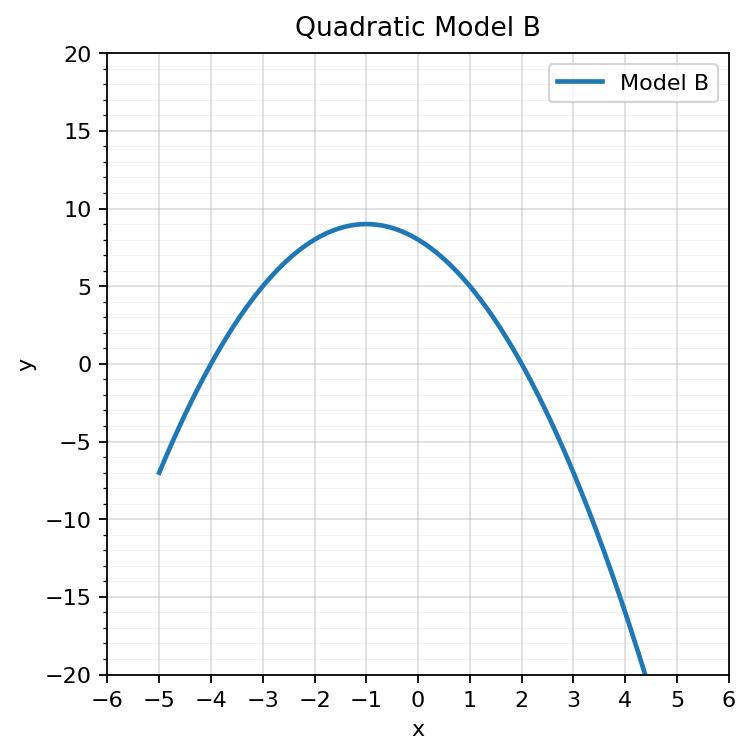

Extra Practice 8.1.4
Algebra 1 Practice Package
Spiral Plan and DoK Balance
Current Focus
Unit 8.1: Selecting Appropriate Models
4 current questions: DoK 1, DoK 2, DoK 3, DoK 4
Unit 8.1: Selecting Appropriate Models
4 current questions: DoK 1, DoK 2, DoK 3, DoK 4
Main Spiral
Unit 7.1: Recognizing Growth and Decay
4 DoK 1, 2 DoK 2, 1 DoK 3, 1 DoK 4
Unit 7.1: Recognizing Growth and Decay
4 DoK 1, 2 DoK 2, 1 DoK 3, 1 DoK 4
Earlier Readiness
Unit 6.1: Solving Quadratics by Factoring
4 questions: DoK 1, DoK 2, DoK 3, DoK 4
Unit 6.1: Solving Quadratics by Factoring
4 questions: DoK 1, DoK 2, DoK 3, DoK 4
Extra Practice: This is a section-aligned spiral: 8.1 with 7.1 and 6.1. It is not a previous-section spiral.
1.
A relationship has a turning point and then decreases after increasing. Which model family might be reasonable?
2.
Use Data Set Beta and Data Set Alpha. Which one is better modeled by a constant rate of change? Which one is better modeled by a constant multiplier? Give evidence.

3.
A model fits the data well inside the displayed window but gives impossible predictions outside the window. Explain how to report the model honestly.
4.
Choose a situation from science, business, or motion. Describe two possible model families and explain what data evidence would help you choose between them.
5.
State whether $A=40(1.18)^t$ represents growth or decay.
6.
Make a table for $y=6(2)^x$ for $x=0,1,2,3,4$.
7.
A student sees outputs $2, 4, 8, 16$ and says the pattern is both adding and multiplying because every number gets bigger. Explain the correct reasoning.
8.
Create a table that represents exponential growth with a multiplier that is not $2$. State the multiplier and explain the pattern.
9.
Which value makes the factor $x+3$ equal zero?
10.
Solve by factoring: $x^2-16=0$.
11.
Use Model B. Estimate the zeros from the graph, then describe how factored form could verify them.

12.
Create and solve a zero-product equation where one solution is $0$. Explain why $0$ is a valid solution.
13.
For $(2x-6)(x+5)=0$, name the two factors.
14.
Solve using the Zero Product Property: $(2x-6)(x+5)=0$.
15.
A student factors correctly but forgets to solve each factor equal to zero. Explain what step is missing and why it matters.
16.
Write a short error-analysis problem about the Zero Product Property and include the corrected reasoning.